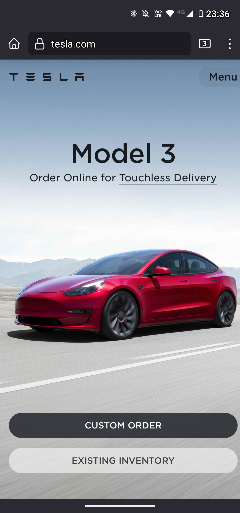

CONTRAST
tesla.com
One of the design principles is contrast. Contrast means the difference between colors that are displayed. On the Tesla website, we can verify this in a good way. The image of the car has a great contrast in comparison to the background, the color gradient includes all elements in the page, is easy to see and interpret these elements, and we can see a color flow. This mixture does not disturb the visitor and gives the right direction in their products.
PROXIMITY
canva.com/pt_br
Another important concept when we are working with design is proximity. The proximity has a unique reference with the elements that are exhibited in our viewport as talking in web design. What the visitor will see? All information, products, icons, and links are related one to another, they have god proximity? It is easy to navigate between these items? The canva.com/pt_br website, can show us this great use of proximity. Right below the search box they give to us a navbar this is the reason for someone to visit this site.
REPETITION
microsoft.com/pt_br
Our third element or principle of design is repetition. This principle is noted when we have similar structuration of the pages, elements, or content as we navigate inside a webpage, or scroll down the web browser. The microsoft.com/pt_br is an example of repetition. When we move inside the website, we saw a repetition of elements, the way that they displayed the website gives us a continuing user experience. We see blocks, similar fonts, elements, and content. Also, the branding process is in this element, in this small view of the site we can see two times the element Microsoft.